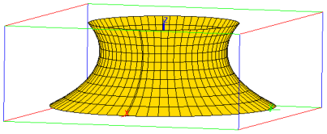

14.6.8 Graph of a quadric
The quadric command draws a quadric.
-
quadric takes one mandatory argument and one optional
argument:
-
q, the expression of a quadric.
- Optionally, vars, a list of three variable names
(by default, [x,y,z]). These names can also be given a separate
arguments.
- quadric(q ⟨,vars ⟩) draws this quadric.
Example
| quadric(7*x^2+4*y^2+4*z^2+4*x*y-4*x*z-2*y*z-4*x+5*y+4*z-18) |
Ellipsoid with center [0.407407407407,−0.962962962963,−0.537037037037]

See also the next section for the parametric equation of the quadric.